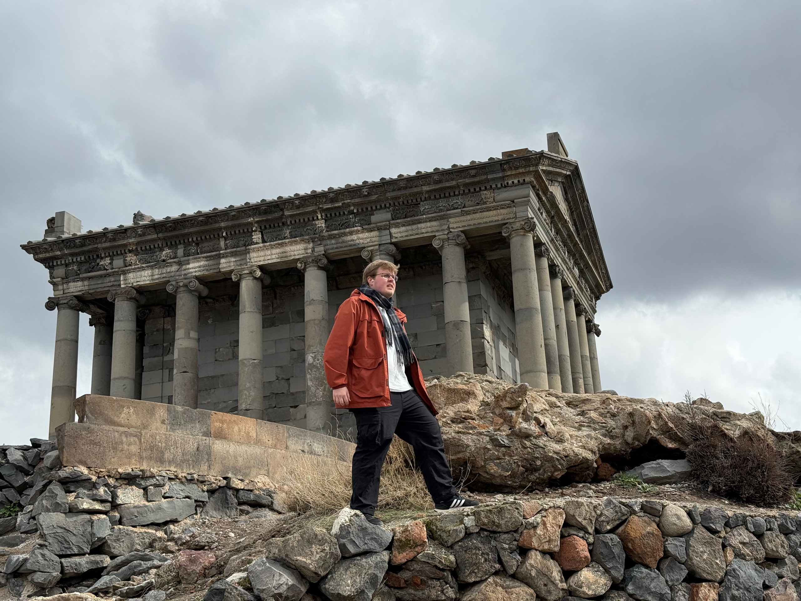

Красноперов Вячеслав Андреевич

студент УрГПУ, исследователь в области методики обучения математике
Разрабатываю и исследую современные средства формирования функциональной математической грамотности и учебной мотивации школьников — от лабораторных работ по математическому моделированию до практико-ориентированных заданий.
Кратко обо мне
20+
научных публикаций
15+
научных конференций
2
статьи в журналах ВАК
3
доп. стипендии
Основные направления исследований
Математическое моделирование
Проектирование лабораторных работ по математическому моделированию как средства формирования соответствующего умения у старшеклассников.
Функциональная математическая грамотность
Разработка методических решений, направленных на формирование и диагностику функциональной математической грамотности.
Мотивация к изучению математики
Исследование факторов развития познавательного интереса, внутренней мотивации и вовлечённости школьников в математическое образование.
Педагогический эксперимент
Организация и проведение педагогических апробаций, статистическая обработка результатов и оценка эффективности образовательных разработок.
Разделы сайта
Сотрудничество
Открыт к научному и образовательному сотрудничеству, совместным исследованиям, участию в конференциях, разработке методических материалов и образовательных проектов. Если вы хотите обсудить совместную работу или задать вопрос, буду рад общению.
Связаться со мной →